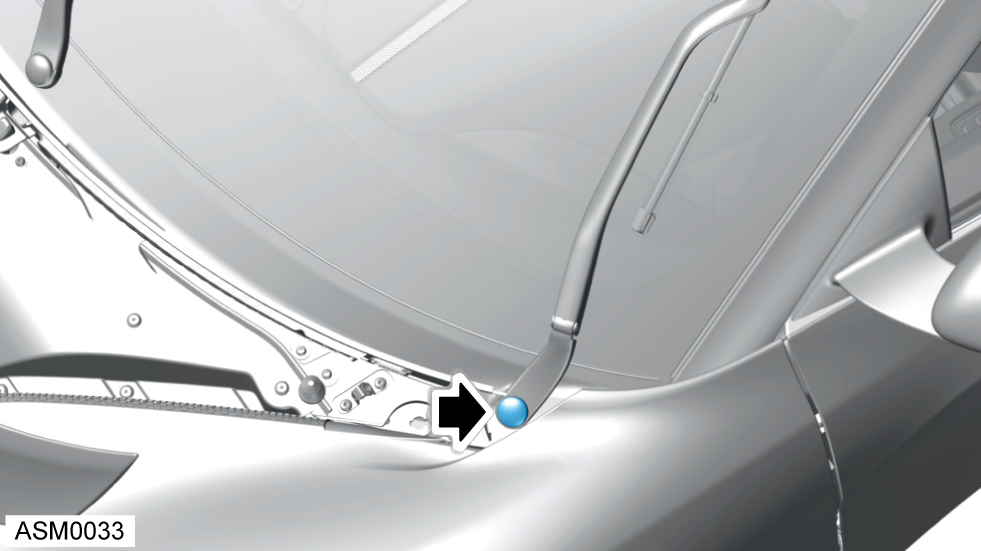
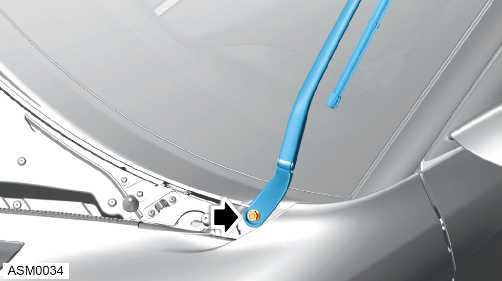

Wiper Arm - Left Side
Print
Operation Code: 17.21.19-02
Removal
- Open access panel - front. Refer to procedure.
- Move wiper arms to the vertical position.
- Mark the position of the wiper arm location.

- Unclip wiper arm cap.

- Remove M10 nut securing wiper arm to splined pivot. Torque 30 Nm.
- Remove the wiper arm from splined pivot.
Installation
- Installation is the reverse of removal procedure except for the following:
NOTE: Make sure wiper arm is aligned correctly during installation. Use position marked during removal procedure.